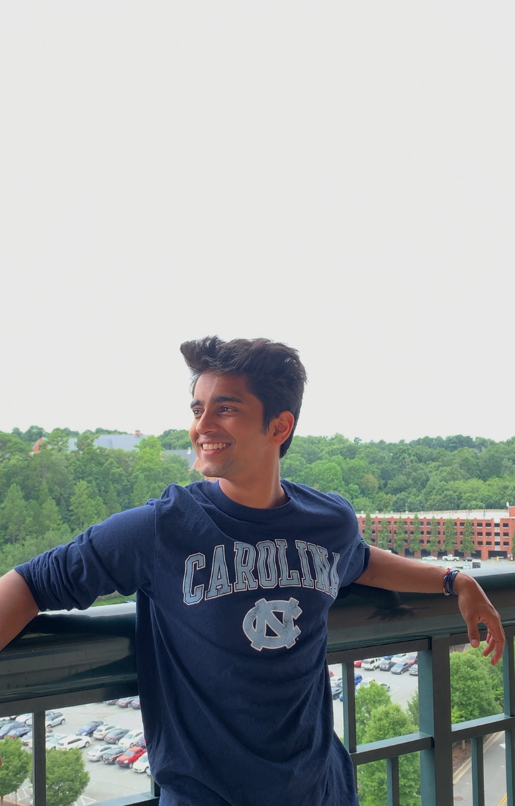

Ron Joshi

I'm a freshman at UNC Chapel Hill double majoring in Computer Science and Mathematics.
Aside from these studies, I'm interested in the fields of physics and business. I would love to be involved in research at UNC, and specialize in machine learning algorithms in later years.
I also love public speech. Psychology, philosophy, and self-development are topics I love to watch and present. Here's a talk I gave on stoicism, and another one I presented about memory, and I aspire to present my own TED talk one day. On a similar note, I previously worked at VRWare, which interested me in presentations and entrepreneurial pitches.
A personal passion of mine is teaching. I love to help explain difficult, complex topics in a much easier-to-understand form, which is what I try to do on my Algorithms Explained page. There are some teachers like 3Blue1Brown that have shown me how the most mind-boggling concepts can be elucidated perfectly, with the right explanation. I'm currently an education teaching assistant at CS+Social Good at UNC, and wish to become a TA/ULA for an intro-level CS course in the future.
I also enjoy working out and playing basketball in my free time.
Don't hesitate to reach out!